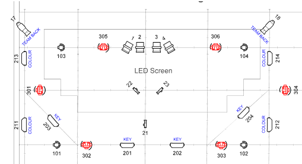

"SoundCheck - Quiz Show" (Dec 2025) | design | show control & networks
SoundCheck was broadcast live from Rose Bruford College as our second-year Quiz Show project. As Lighting Designer I was able to apply myself to creating punchy, clean keylight for live broadcast against a video wall backdrop, and building programming with a central show control system to heighten interactive effects.
MORE PHOTOS AND THE FULL BROADCAST WILL BE AVAILABLE SOON

